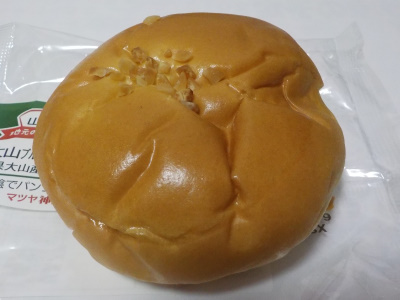
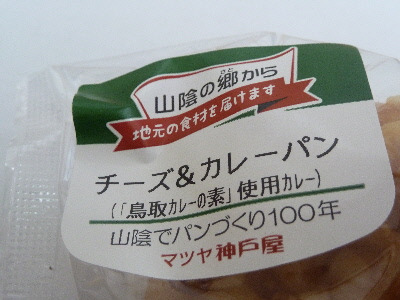
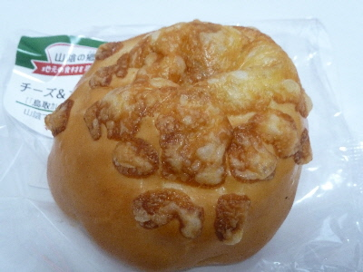
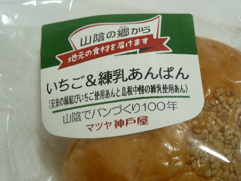
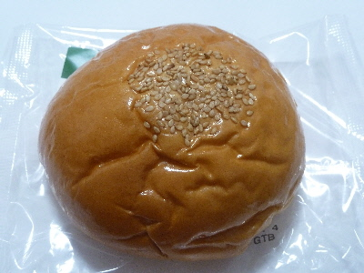
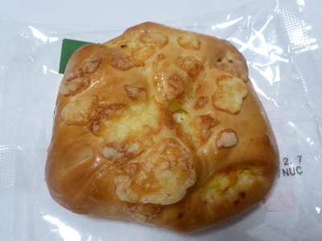
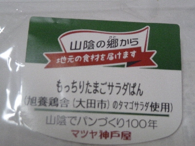
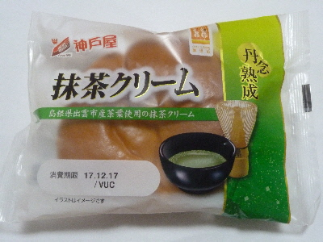
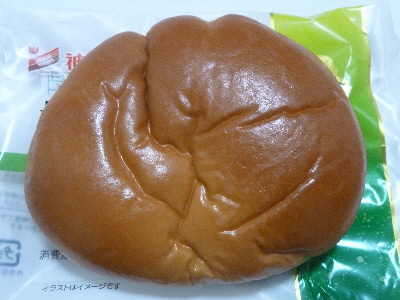

マツヤ神戸屋の大山ブルーベリーホイップ
2018/09/09
鳥取県大山産ブルーベリー使用ジャムが入ったジャムパンです。

ジャム多目なので結構甘かったです。
ホイップムリームも入っています。
疲れて甘いもの欲しいって時にピッタリの商品だと思いました。
島根県松江市矢田町250番地20
2018/09/09
鳥取県大山産ブルーベリー使用ジャムが入ったジャムパンです。

ジャム多目なので結構甘かったです。
ホイップムリームも入っています。
疲れて甘いもの欲しいって時にピッタリの商品だと思いました。
2018/03/11
鳥取カレーの素使用だそうです。

鳥取カレーはなんか聞きますが、「鳥取カレーの素」ってあったんですね。
どんなのかなーと調べたら、アマゾンでこんなのがありました。
鳥取っぽい具材がいろいろ入ってるカレールーみたいです。
チャレンジャーは買ってみてください。

このパン食べれば気軽に鳥取カレーが食べれるってことですね。
いい商品だ。
鳥取カレーはこんな味なんだって納得しながら食べました。
2018/03/05
マツヤ神戸屋さんのご当地シリースは次々と新商品がでていいですね。

今回は安来のいちごと中酪の練乳使用のパンです。

パンの表面がツヤツヤテカテカです。
なぜ、こんなにテカテカなんでしょう？
白あんベースのあんぱんって久々に食べた気がする。
あんこ味が薄いので、イチゴ味が分かりやすかったです。
個人的にはパンの中にあんこがいっぱい入っていて欲しかったかな。
2018/02/06
パンの上にはチーズが乗っているので、袋を開けたときにチーズのいい匂いがしました。

パンの中にはタマゴサラダが入っていました。
たまごサンドの具がパンの中に入ってる感じです。
たまごのパンは美味しいなー。

旭養鶏舎のタマゴだそうです。
2017/12/13
島根県出雲市産茶葉使用の抹茶クリームです。

抹茶クリームのパンって初めて食べたかも。

抹茶アイスやソフトがあるように、抹茶クリームも抵抗なく普通に美味しかったです。
クリームパンの味を残しつつ、抹茶の味とサッパリ感がある商品でした。
マツヤ神戸屋のパンは、スーパーやドラッグストアで販売しているのでよく見ます。